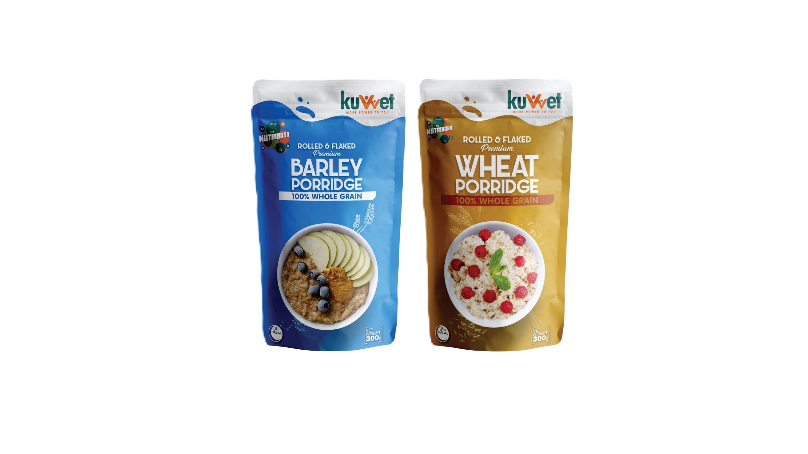

Top Rated
Best Sellers

Jhat Hazam
Premium digestive tablets crafted with traditional flavors and Himalayan Salt.

Major Grains Cereal
Authentic wholesome grains packed with essential nutrients for your day.

kuVvet Porridge
Nourishing slow-cooked goodness powered by Nutribond technology.